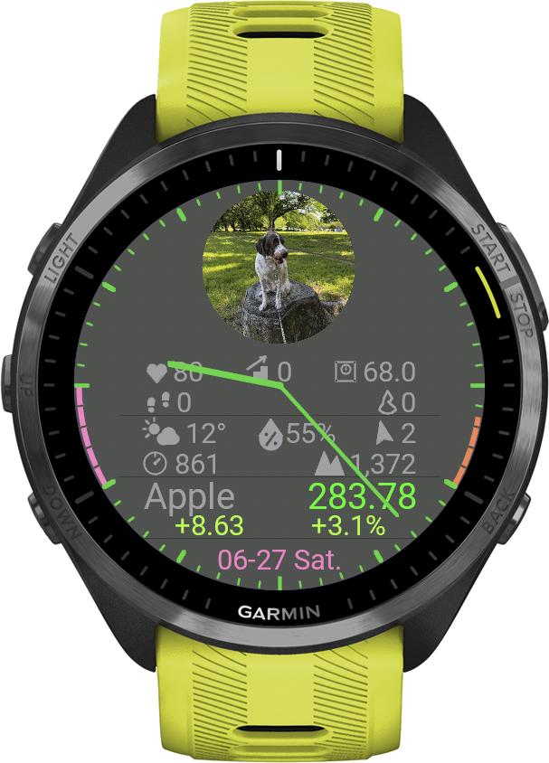

MarketWatch — User Manual
A complete walkthrough of every screen, gesture and setting. (v2.3.3)
1. Getting Started
MarketWatch works out of the box: install it, and an 18-symbol starter portfolio appears with auto-refreshing prices. Every feature is free for the first 14 days.
- Install MarketWatch on your watch from the Connect IQ Store.
- Open the app — it opens to the Watch Face Home (a clock screen); tap or press START to enter your markets list. The 14-day full-feature trial starts automatically. No payment, no account.
- To keep using it after the trial: purchase a lifetime license ($7.99, one-time) on the MarketWatch homepage. You'll receive an activation key by email.
- Enter the key in Connect IQ Mobile → MarketWatch → Settings → License Key, then restart the app.
2. Watch Face Home
When you open MarketWatch it lands on the Watch Face Home — a clock screen you can make your own. Pick an analog or digital clock, drop in your own image, and add up to three live info rows. Tap to dive into your markets; press BACK to come back to the face.

| Action | What it does |
|---|---|
| Tap / START | Enter the markets list |
| Long-press a Net or symbol row | Open that detail screen (BACK returns to the home) |
| Long-press an info bar | Change the bar's color (the home bar color is independent of the list) |
| Long-press the clock / image / empty area | Open the Watch Face settings menu |
| BACK | Exit the app |
Clock styles
- Hands — analog hands from the center.
- Rim marks — slim hands that sweep along the rim.
- Digital — time at the top and date at the bottom, like the list screen.
Turn Clock Ticks (the rim graduations) on or off. Colors are grouped under Color: Hand, Clock and Background — Background includes an Auto option that derives a matching tone from your custom image — plus Halo, a dark outline that keeps text readable over a photo background.
Info rows
The home has five row slots (Row 1 to 5). Set each to Off, Net (portfolio total), the Weather Bar, the Physical Bar, or any symbol — chosen by its list slot number. Watches with a 416 px or larger screen show up to five rows; smaller ones show up to four.
Swipe up or down on the home to scroll the rows one step at a time. They slide off the top or the bottom edge, and the image grows into the space they leave behind — so you can go from a full list of rows to just the clock and the image without changing any setting.
Custom image
Show your own image on the face. Open the MarketWatch image page, enter your Device ID (no account needed) and upload — it appears as a circular image on your watch, sized to follow the number of rows. Without a custom image, a default logo is shown.
Tap the Image item in the Watch Face menu to cycle its placement: Auto (fills the space left by the rows) ⇄ Full (full screen). If you haven't uploaded a custom image, the default logo is shown instead.
Watch Face settings menu
Long-press an empty part of the home (the clock or image) to open it: Clock Style, Clock Ticks, Color (Hand / Clock / Background / Halo), Image, Row 1 to 5, Battery Saver, Saver Wake, and your Device ID. Single-choice items like Clock Style and Image cycle in place — just tap to advance, no submenu to open.
3. List Screen
Your markets list — reached by tapping (or pressing START on) the Watch Face Home. Time on top, date at the bottom, and your symbols in between — each row shows name, price, day change (amount and %). The list scrolls in a loop.

| Action | What it does |
|---|---|
| UP / DOWN or swipe | Scroll the list (cyclic) — the row you want moves to the markers |
| Tap a row | Open that row's menu (symbol menu / Net / info bar) |
| START | Open the menu of the row at the markers (centre row) |
| Long-press a symbol | Same as tapping it — opens the symbol menu |
| Tap / long-press the date area | Settings menu — add symbols / info bars, and adjust app settings |
| Long-press an info bar | Bar menu — Move to / Color / Change Type / Delete |
| BACK | Return to the Watch Face Home |
4. Managing Symbols
Up to 20 symbols, all managed directly on the watch. No phone needed.
Adding a symbol
- Tap (or long-press) the date area at the bottom of the list screen.
- Choose New Entry — the keyboard opens.
- Type the Yahoo Finance ticker (e.g. AAPL, 7203.T, BTC-USD) and confirm. The name fills in automatically.
The symbol menu (tap a row)
| Item | What it does |
|---|---|
| Open Detail | Open the chart / detail screen for this symbol |
| Move to... | Reposition: pick Top or a destination slot — other symbols shift to make room |
| Edit Ticker | Replace the ticker (name re-fills automatically from Yahoo) |
| Edit Name | Edit only the display name |
| Delete | Remove the symbol from the list |
Supported instruments
- Stocks & ETFs from 30+ exchanges:
AAPL,7203.T,0700.HK,SAP.DE - Indices:
^GSPC,^N225,^VIX - FX:
USDJPY=X,EURUSD=X - Crypto:
BTC-USD,ETH-USD(USD) orBTC,ETH(JPY) - Commodity futures:
GC=F,CL=F - US Treasury yields:
^TNX,^TYX
5. Detail Screen
Tap a symbol (or choose Open Detail) to see its chart with key stats: high/low of the chart window, the chart's date range (S:/E:), today's volume (Vol:) and the current chart period (Per:).

| Action | What it does |
|---|---|
| UP / DOWN or swipe | Previous / next symbol (info bars are skipped; Net opens its own detail) |
| START | Refresh this symbol's price now |
| Tap the chart | Return to the list (only the chart area goes back) |
| Long-press the chart | Open the position memo (chapter 7) |
| Tap the H/L · S/E area | Toggle the volume bar graph (chapter 6) |
| Long-press UP | Chart period select mode (chapter 6) |
| Tap / long-press the date (bottom) | Chart period menu |
| BACK | Return to the list |
6. Charts & Volume
Six chart periods
| Period | Bars × window | S:/E: format |
|---|---|---|
| 5 min | 5-minute bars × today | time (09:00) |
| 30 min | 30-minute bars × 1 week | month/day (3/12) |
| 90 min | 90-minute bars × 1 month | month/day (3/12) |
| 1 day | daily bars × 3 months | month/day (3/12) |
| 1 week | weekly bars × 1 year | year/month (25/6) |
| 1 month | monthly bars × 5 years | year/month (21/6) |
Switching with buttons (period select mode)
- In the detail screen, long-press UP — a white frame appears around Per:.
- Press UP / DOWN to cycle through the periods. The chart reloads immediately each time.
- Press START (or BACK) to confirm and close the frame.
The period applies to all symbols and is remembered across restarts.
Volume bar graph
Tap the H/L · S/E area (just below the chart) to swap those rows for a volume bar graph drawn on the same time axis (one bar per chart point). Tap again to switch back. The choice is remembered.
7. Position Memo & Net
Each symbol has a memo that turns MarketWatch into a portfolio tracker. Long-press the chart in the detail screen to open it.
- Cost / Qty — long-press to enter your cost basis and holdings
- Value / P&L / % — calculated automatically from the current price
- Alert 1 / Alert 2 — long-press to set price-cross alert levels (chapter 8)
Tap the memo to close it. All memo data stays on the watch and survives app updates.
The Net row
Once at least one symbol has Cost and Holdings, a Net row joins the list cycle: your whole portfolio's P&L at a glance. Tap or long-press it for the Net detail screen with an aggregate P&L chart.
8. Price Alerts
Set up to two alert prices per symbol in its memo. When the current price crosses a level — in either direction — the watch vibrates and plays a tone, and the symbol's name blinks yellow on the list.
- Press BACK to stop the blinking (the name stays yellow until the next refresh).
- How you're notified is a single Alert item: long-press the date area → tap Alert to cycle Vib + Snd → Vibration → Off.
- Alert baselines reset when you change settings, so a level you already crossed won't re-fire immediately.
9. Info Bars
Two optional bars can live inside your list, turning it into a glanceable dashboard — like a watch face with market data.

Weather Bar
- Top row: condition icon + temperature / humidity / wind speed & direction
- Bottom row: air pressure (hPa) / altitude (m)
- Wind speed unit (m/s, km/h, mph, knots) is set in the Connect IQ settings panel
Physical Bar
- Top row: heart rate / floors climbed / weight
- Bottom row: steps / calories
Adding and customizing
- Long-press the date area → choose Weather Bar or Physical Bar. The bar appears right after the top of the cycle.
- Long-press the bar itself to open its menu: Move to (position), Color (6 colors), Change Type (Weather ⇄ Physical), Delete.
10. Rim Meters
Curved gauges along the left and right edges of the list screen. Assign a data source to each side independently: Body Battery, Stress, or the watch's Battery.
- Body Battery — orange; higher is better
- Stress — red-orange; higher means more stress
- Battery — follows your Clock Color setting
Set the source via the date menu: tap Left Rim Meter / Right Rim Meter to cycle Battery → Body Battery → Stress → None (None hides that side). Values refresh about once a minute.
Each meter's color can be set independently under the date menu's Color submenu (Left / Right Rim Meter): Auto keeps the color-by-metric behavior above, or pick any of the clock palette colors.
11. Settings
Most settings live on the watch: long-press the date area on the list screen. Each entry shows its current value, and single-choice items cycle in place when you tap them — no submenu to open.
| Watch (date menu) | Options |
|---|---|
| New Entry | Add a symbol (when a slot is free) |
| Weather Bar / Physical Bar | Add the info bar |
| Watchface | On / Off — the Watch Face Home (Off opens the app straight to the list) |
| Refresh Interval | 30 sec / 1 min / 5 min / 15 min / 30 min |
| Color (submenu) | Clock (12 colors) / Background (Black / Charcoal / Gray / Navy / Dark Red / Dark Green / Auto) / Left & Right Rim Meter color (Auto + 11 colors) |
| Left / Right Rim Meter | Battery / Body Battery / Stress / None (tap to cycle) |
| Alert | Vib + Snd / Vibration / Off (tap to cycle) |
A few items remain in the phone's Connect IQ settings panel:
| Phone (Connect IQ panel) | Purpose |
|---|---|
| License Key | Activate your purchase |
| Color Mode | Red Up / Green Down — or Green Up / Red Down |
| Wind speed unit | m/s / km/h / mph / knots |
| Complication Slot 1 / 2 | Which symbols feed your watchface (chapter 12) |
| Glance Display | Net or a chosen symbol in the Glance widget |
| Pushover (optional) | Earnings / dividend push notifications to your phone (US stocks and some Japanese stocks) |
12. Complications & Glance
Watchface complications
MarketWatch publishes up to two symbols as complications. Assign them in the Connect IQ settings panel (Complication Slot 1 / 2), then pick MarketWatch as a data field in any compatible watchface. Tapping the complication jumps straight into that symbol's detail screen.
Glance
In the watch's glance list, MarketWatch shows either the Net (portfolio P&L) or one symbol of your choice — set via Glance Display in the Connect IQ panel.
13. Battery Saver
When you leave the watch alone for a while, MarketWatch switches to a dimmed view that shows only the clock — the same clock style, date and tick marks you have chosen — on a black background. Rows, info bars, rim meters and the background image are hidden. Prices keep updating in the background as usual. Tap the screen (or raise your wrist) to return to exactly the screen you were on.
Even if you have turned Garmin's Always On display setting off, this still helps. The watch decides when to blank the screen from the angle of your wrist, so during desk work — when your hands rest on a keyboard and the face already points upwards — it keeps the screen lit. Battery Saver instead looks at whether you are using the app, so it covers exactly that case.
Settings
Both items are in the Watch Face settings menu (long-press an empty part of the home). Battery Saver is off by default.
| Watch Face menu | Options |
|---|---|
| Battery Saver | Off / 5 sec / 10 sec / 20 sec — how long without input before the screen dims (tap to cycle) |
| Saver Wake | Motion / Tap — whether raising your wrist also wakes the screen. Tapping always works in both (tap to switch) |
14. Troubleshooting
Prices show “--” or stop updating
Check that your watch is connected to Garmin Connect Mobile and the phone has internet. With many symbols and a 30-second interval, some fetches can lag — reduce the symbol count or lengthen the Refresh Interval.
A ticker shows “--” forever
The ticker is probably wrong or delisted. Verify it with the lookup tool on the homepage (exchange suffix matters: 7203.T, not 7203).
The chart area says Loading... for a long time
Chart data downloads on demand; on a weak phone connection the longer periods (1 week / 1 month) can take several seconds. Press START to retry.
Weather Bar shows “--”
The watch hasn't received weather from your phone recently. Open Garmin Connect on the phone with internet access, wait a minute, then re-open MarketWatch. Note that on some models, altitude and air pressure may not be available.
“No volume data” in the volume graph
Normal for FX pairs and indices — they have no traded volume.
Trial expired — symbols disappeared
Purchase a license on the homepage ($7.99 one-time), enter the emailed key in Connect IQ settings → License Key, and restart the app. Your symbols and memos are still on the watch and reappear after activation.
UP/DOWN doesn't change the symbol in the detail screen
You're probably in period select mode (white frame around Per:). Press START or BACK to close it, then UP/DOWN switches symbols again.